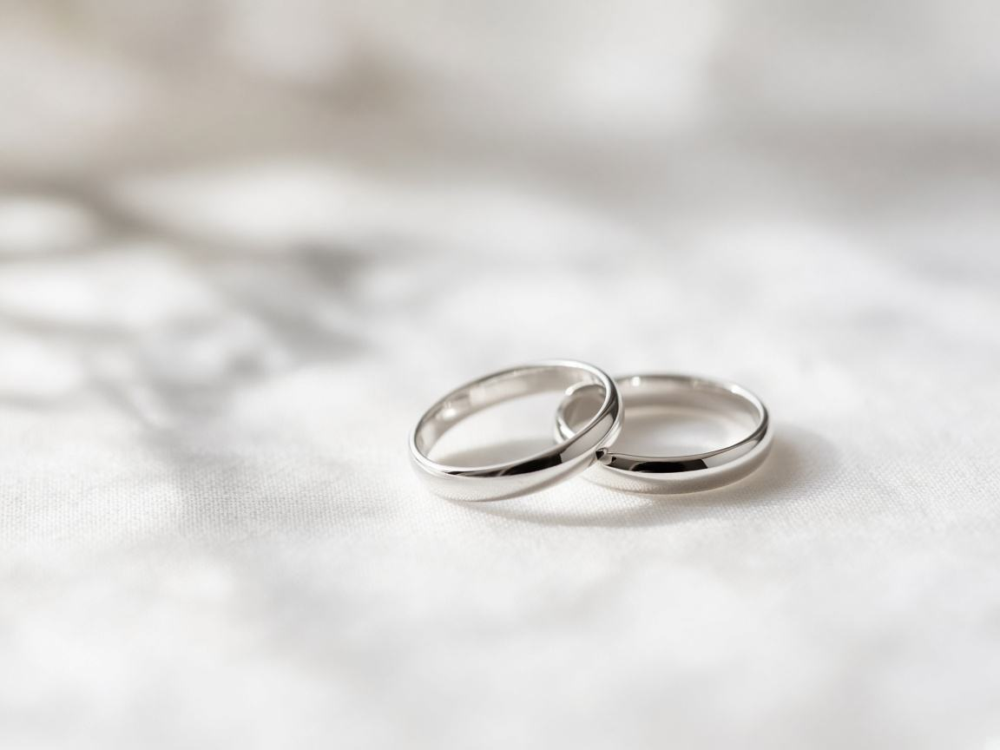

UNA MIRADA CUIDADA. UNA HISTORIA PROPIA.
Tu historia.
Una imagen
que permanece.
Fotografía con intención, sensibilidad y una atención
especial a cada detalle.

01 / EL ESTUDIO
El detalle hace
la diferencia.
Soy Manuel Shoo. Creo en las fotografías que se sienten tan auténticas como el momento en que fueron tomadas.
Desde una celebración hasta un retrato personal, mi enfoque es el mismo: entender tu historia, cuidar la luz y encontrar aquello que hace único cada instante.
MÁS QUE UNA FOTOGRAFÍA
Una buena imagen no solo muestra.
También transmite.
02 / TRABAJO SELECCIONADO
Historias en imágenes.
Personas, celebraciones y detalles.
Una selección de distintas miradas.
03 / SERVICIOS
Una sesión a
tu medida.
Cada proyecto comienza con una conversación.
Definimos juntos el enfoque y los detalles.
Bodas & celebraciones
Una mirada sensible para los momentos que quieres recordar.
↗02Retratos & imagen personal
Fotografías que reflejan tu personalidad con naturalidad.
↗03Eventos & encuentros
La atmósfera, las personas y los detalles de tu ocasión.
↗04Familia & maternidad
Historias cercanas, desde la espera hasta los primeros recuerdos.
↗EL PROCESO
Todo empieza contigo.
Tu idea, nuestro punto de partida.
Compartes lo que tienes en mente y el tipo de imágenes que buscas.
Cuidamos cada detalle.
Definimos el estilo, la locación y el enfoque de la sesión.
Disfruta el momento.
Una sesión cercana y una selección de imágenes que cuentan tu historia.

04 / TU PRÓXIMA HISTORIA
Hagamos algo
memorable.
Cuéntame tu idea. Preparemos juntos el siguiente paso.